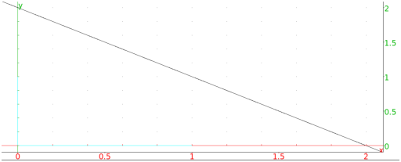
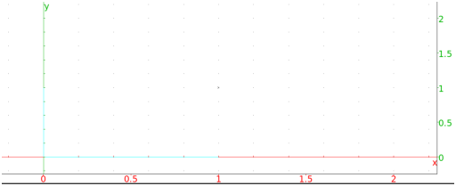

13.17.5 Pole and polar: pole polar
Given a circle centered at O, a point A is a pole and a line L
is the corresponding polar if L is the line passing through the
inversion of A with respect to the circle (see
Section 13.15.7) passing through the line
OA.
The polar command finds the polar of a point.
-
polar takes two arguments:
- polar(C,A) returns and draws the polar of the point
A with respect to C.
Example
Input:
polar(circle(0,1),(i+1)/2)
Output:

The pole command finds the pole of a line.
-
pole takes two arguments:
- pole(C,L) returns and draws the pole of the line
L with respect to C.
Examples
-
Input:
pole(circle(0,1),line(i,1))
Output:

- Input:
affix(pole(circle(0,1),line(i,1)))
Output: